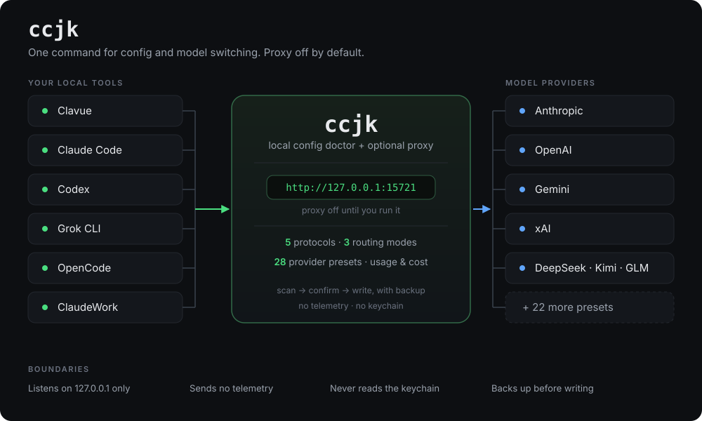

ccjk 是 Clavue、Claude Code、Codex、Grok 的本地配置医生。扫描本地配置，确认后写入 API、模型和工作流。 需要时再开一个只听本机的代理，不用再养一个常驻应用。
$ npm install -g ccjk

每换一家模型，就要对着不同工具改不同格式的文件。ccjk 把它收成一条命令，并且在写盘前先备份。
先看本地配置的健康度，确认后才写。任何写盘前产生备份，代理写入另外留第一次快照，可以还原。
换模型不用再装一个常驻应用。一行指定工具和「服务商 / 模型」，听得懂就直接连接，听不懂就经过本机翻译。
Clavue、Claude Code、Codex、Grok、OpenCode、ClaudeWork；内置 28 个服务商预设，也接任何 OpenAI 兼容端点。
ccjk ui 打开：每次请求的日志、一次请求试过哪几家、按服务商 / 模型 / 账号拆开的用量，今天 / 7 天 / 30 天随便切。⌘K 搜页面和模型，界面可切中英。地址栏带路由，刷新和收藏都停在原页。
代理只听 127.0.0.1，不读钥匙串，不冒充官方客户端，不发送遥测。服务商密钥本机加密保存，不进配置文件。
每个工具一条路由，互不影响。协议互转支持 anthropic-messages、openai-chat、openai-responses、gemini 和 xai。接法收在「高级：接法」里，点「使用这家」或「用这个」才写入。
工具自己去连。Claude 系只对 Anthropic 消息接口直连；Codex、Grok、OpenCode 只对 OpenAI Chat、OpenAI Responses 和 xAI 直连。
听不懂的接口由本机翻译。可以按顺序、轮流，或先用得少的换上游；同一段对话在上游还健康时继续用同一家。
把几家的模型放进一个列表，模型名带 ccjk-<服务商>--<模型> 前缀。
下面的输出来自 ccjk 本身的命令行文案。
$ ccjk proxy use --tool claude-code --model deepseek/deepseek-chat 已写入 /Users/你/.claude/settings.json $ ccjk ui 已在后台启动代理：http://127.0.0.1:15721 界面 http://127.0.0.1:15721/ui $ ccjk proxy start ccjk proxy 正在监听 http://127.0.0.1:15721 只接受 127.0.0.1。Ctrl+C 停止。 $ ccjk proxy save --name 上班 已保存配置档 上班
需要 Node.js 20 或更新版本。
npm install -g ccjk
装好之后，ccjk 打开医生 / 操作员菜单。
ccjk ui
代理没在跑时会先拉起来，然后打开本机界面，默认 http://127.0.0.1:15721/ui。
ccjk proxy use --tool claude-code --model deepseek/deepseek-chat
按「工具 + 服务商 / 模型」写入。这个工具听得懂该接口就直接连接，听不懂就经过本机。
ccjk proxy revert
按第一次写入前的快照还原。卸掉 ccjk 之前先跑一次。
三家都在解决「别再手改各家配置」，形态不同。下面按各自介绍页写的事实对照。
| ccjk | cc-switch | magpie | |
|---|---|---|---|
| 形态 | 终端 CLI + 本机 Web 控制台 | 桌面应用 | 菜单栏 + 本地网关 |
| 主业 | 扫配置、备份后写入、还原 | 在一个应用里管服务商、MCP、Skills、Prompts | 把很多 agent 的模型接到一个网关 |
| 观测 | 日志、选路时间线、按模型 / 账号用量 | 应用内看用量 | 网关侧看请求与用量 |
| 代理 | 可选，只听 127.0.0.1 | 以改各客户端配置为主 | 网关就是产品，默认本机，也可以共享到局域网 |
| 密钥 | 你自己的密钥，不读钥匙串 | 在应用里填写和切换 | 可读钥匙串，也能发现订阅 |
| 路由 | 顺序、轮流、按用量，同一段对话粘住 | 切换当前供应商 | 还有 smart、pace |
| 遥测 | 没有 | 介绍页没有把遥测当作功能 | 介绍页写了每日遥测 |
说清楚边界，比堆功能更让人放心。
不碰 agent runtime，不在运行时偷偷注入 hook 或命令。
账号槽只保存你自己粘贴的凭证。在官方客户端之外使用订阅，可能违反厂商条款。
只监听 127.0.0.1，不做局域网共享，也不做 Docker 分发。
换上游只用顺序、轮流、用量三种。需要订阅重置窗口的策略，用 magpie。
他们覆盖得更宽的地方：桌面里同时管 MCP、技能和提示词，菜单栏，订阅和钥匙串，六十多个 agent， 插件，局域网和 Docker。要这些，用他们。